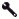

Testing the Body language¶
Testing the Animated say box¶
 Cannot be tested on a simulated robot.
Cannot be tested on a simulated robot.
| Step | Action |
|---|---|
| Connect Choregraphe to a real robot. | |
| Drag and drop the Speech > Creation > Animated Say box onto the Flow Diagram panel. | |
| Connect its input to the main input of the behavior. | |
Click the  Play button to test the result. Play button to test the result. |
Customizing the text¶
| Step | Action |
|---|---|
| Double-click the box and enter your own text in the Localized text box. | |
| Click the Play button to test the result. |
Testing the speaking movement option¶
| Step | Action |
|---|---|
Click the  Parameter button of the Animated Say box and choose the Speaking movement mode. For further details, see: Speaking Movement Modes. |
|
| Click the Play button to test the result. |
Adding instructions¶
| Step | Action |
|---|---|
Choose one or several body language behavior(s) among those installed on the robot. You can choose for example Hey_1, Hey_6 or Please_1. |
|
Compose a text including instructions using this behavior. For example: ^start(animations/Stand/Gestures/Hey_1) My friend, the weather
is really hot today!^stop(animations/Stand/Gestures/Hey_1)
^start(animations/Stand/Gestures/Please_1) Do me a favor,
turn on the fan!^wait(animations/Stand/Gestures/Please_1)
For further details, see: Instructions. |
|
| Paste this text in the Localized text box located inside the Animated Say box. | |
| Click the Play button to test the result. |
To go further¶
Creating an animation¶
This tutorial explains how to create a Behavior and then use it in an annotated text.
| Step | Action |
|---|---|
Create a Timeline box containing a short animation. For example, you can use the Animation > Animation Library > Dialog animations > Negation > NAO> BothArmsUpAndDown_HeadShake_01 box. |
|
| Connect the box to the onStart input and onStopped output. | |
| Right click the box and choose Edit resources. | |
Make sure the resources used by the box are selected and set the parameters as following:
The way the resources has been set guaranties that before starting its execution, the Behavior will give enough time to the current animation to stop and release the requested resources. |
|
Display the Robot applications panel and Install the current project on the robot. If you haven’t saved the behavior yet, you will be prompted to give a name to the behavior. Example: |
|
You can now use the name of this Behavior in an annotated text. Example: My name is John Doe, I'm a robot, I would be glad to talk to you.
^start(my_amination_wipe) But, look, it's a very hot day!
^wait(my_amination_wipe) ^start(animations/Stand/Gestures/You_1)
Could you turn on the fan, please?
^stop( animations/Stand/Gestures/You_1)
|
{kind=link}